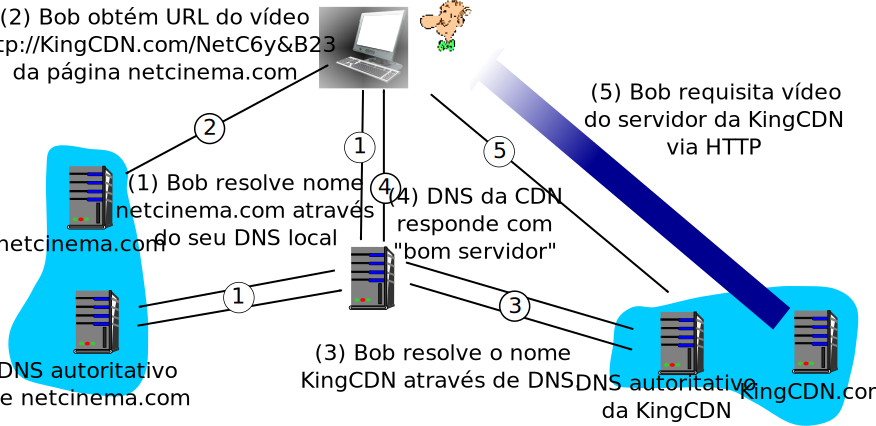
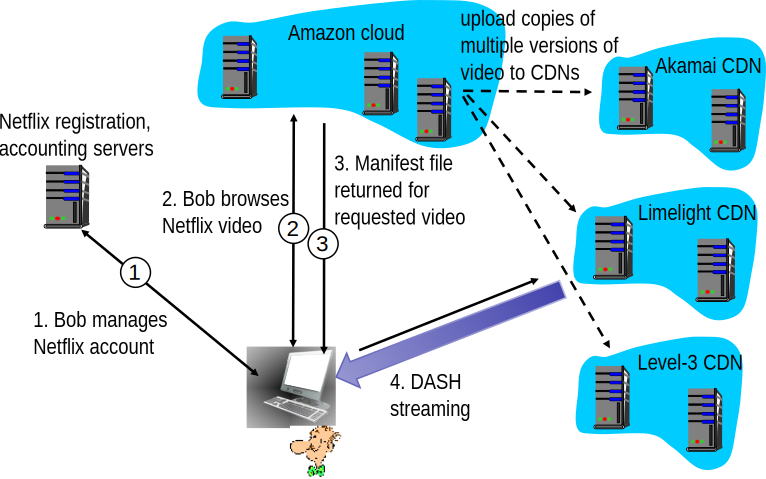
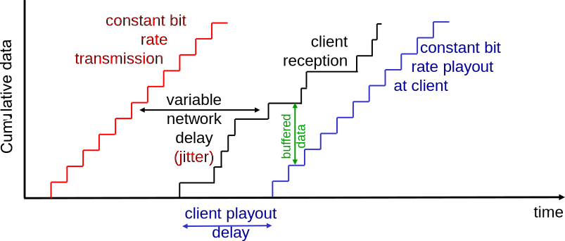
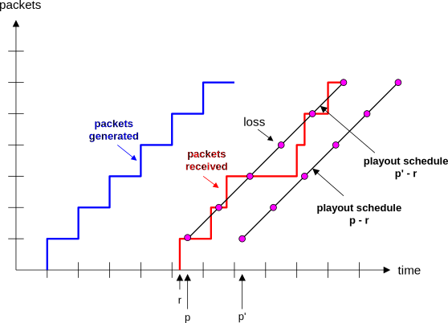
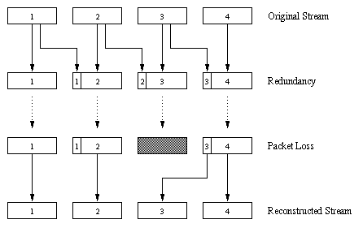
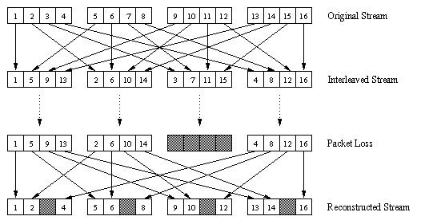
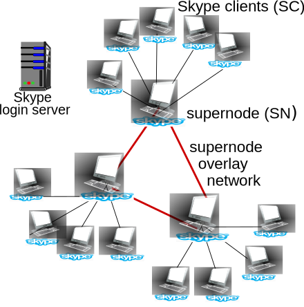
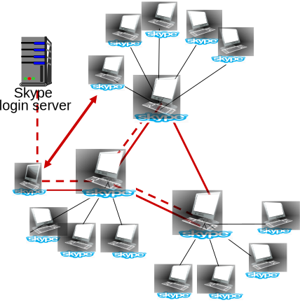
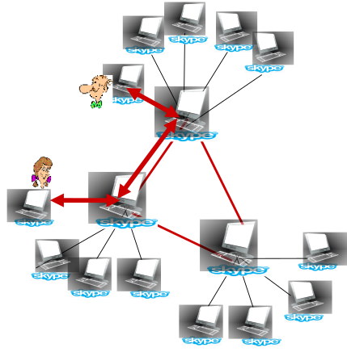

Aula 22 - CDN, Netflix, VoIP
Diego Passos
Universidade Federal Fluminense
Redes de Computadores II
Na Última Aula (I)...
Tipos de conteúdo: áudio e vídeo.
Sequências de
amostras
.
Imagens estáticas ou sinal sonoro.
Amostras são
quantizadas
: mapeadas para valores discretos.
Taxa de amostragem
: quantas amostras por intervalo de tempo.
Bits por amostra
: quanto mais bits, maior a resolução da amostra.
Reduzir taxa de amostra ou bits por amostra reduz tamanho do conteúdo.
Mas também
reduz qualidade
.
e.g.
, introdução de
ruído de quantização
.
Compressão de dados: reduzir
redundância
.
Temporal
ou
espacial
.
Pode levar a
taxa variável
.
Tipos de aplicação multimídia:
Streaming
de conteúdo
armazenado
.
Reprodução começa
antes
do cliente obter todo o conteúdo.
Mas conteúdo completo já está
pronto, armazenado
no servidor.
Pode ser transmitido
mais rapidamente que a taxa de reprodução
.
Conversação de voz/vídeo.
Aplicação
interativa
, baixa
tolerância a atraso
.
Streaming
de conteúdo ao vivo.
Na Última Aula (II)...
Aplicações multimídia e a Internet: desafios.
Internet: rede de
melhor esforço
.
Perda de pacotes,
atrasos variáveis
(
jitter
).
Buffer de reprodução: absorve variações.
Cliente
não começa
reprodução imediatamente.
Aguarda período,
bufferizando
amostras.
Se
buffer
é grande o
suficiente
, variações não serão percebidas.
Por outro lado:
buffer
muito grande
, grande
atraso do início da reprodução
.
Buffer e vazão: se taxa de chegada de dados é
menor que a taxa de reprodução
,
buffer
será
esgotado
.
Não importa seu tamanho, supondo que conteúdo seja
longo
.
UDP
vs.
TCP:
UDP:
taxa constante, independente de congestionamento
, pode ser filtrado.
TCP (HTTP): transmitido
o mais rápido possível
,
firewall friendly
.
DASH:
taxa adaptativa
, escolhida pelo
cliente
.
Redes de Distribuição de Conteúdo (I)
Desafio:
como fazer
streaming
de conteúdo (selecionado entre milhões disponíveis) para centenas de milhares de usuários simultâneos?
Opção 1:
um único "mega servidor".
Ponto único de falha.
Ponto de congestionamento da rede.
Longo caminho para clientes distantes.
Múltiplas cópias do vídeo enviadas pelo mesmo enlace de saída.
Resumo: esta solução
não escala
.
Redes de Distribuição de Conteúdo (II)
Desafio:
como fazer
streaming
de conteúdo (selecionado entre milhões disponíveis) para centenas de milhares de usuários simultâneos?
Opção 2:
armazenar/servir múltiplas cópias dos vídeos em vários servidores geograficamente distribuídos (
CDN
).
Alta penetração
: servidores CDN inseridos em várias redes de acesso.
Próximos aos usuários.
Usado pela Akamai, 1700 regiões.
Vizinhanças
: Número menor (dezenas) de
clusters
maiores próximos (mas não dentro) das redes de acesso.
Usado pela Limelight.
CDN: Exemplo “Simples” de Acesso a Conteúdo
Bob (cliente) requisita vídeo em
http://netcinema.com/6Y7B23V
.
Vídeo armazenado na CDN em
http://KingCDN.com/NetC6y&B23V

CDN: Estratégia de Seleção de Cluster
Desafio:
como o DNS da CDN seleciona um servidor “bom” para prover o conteúdo ao cliente?
Seleciona servidor mais próximo geograficamente.
Seleciona o servidor CDN com o menor atraso.
Servidores CDN periodicamente enviam
pings
para ISPs, reportando resultados ao DNS.
Utilização de IP
anycast
.
Alternativa:
deixar o
cliente
decidir.
Dar uma lista de vários servidores CDN.
Cliente faz
ping
para os servidores, escolhe o “melhor”.
Estratégia usada pelo Netflix.
Estudo de Caso: Netflix (I)
Responde por 30% do tráfego
downstream
nos EUA (2011).
36,5% em 2015.
Possui pouca infraestrutura, terceiriza muitos serviços.
Possui servidores para registro e pagamento dos usuários.
Terceiriza serviços para a Amazon Cloud Services.
Envia versão original dos conteúdos para a nuvem da Amazon.
Na nuvem, cria múltiplas versões de cada vídeo (diferentes codificações).
Faz o
upload
das versões para CDNs.
Nuvem hospeda páginas do Netflix usadas para usuários acessarem o catálogo.
Três
serviços terceirizados de CDN são usados pelo Netflix:
Akamai, Limelight e Level-3.
Estudo de Caso: Netflix (II)

Voz Sobre IP
Voz Sobre IP (VoIP)
Requisitos de atraso fim a fim:
necessários para manter aspecto conversacional.
Grandes atrasos são notáveis, dificultam interação.
< 150 ms: bom.
> 400 ms: ruim.
Inclui tanto atrasos da rede, quanto da aplicação (empacotamento,
buffer
).
Inicialização da sessão:
como receptor de chamadas anuncia endereço IP, número de porta, algoritmos de codificação?
Serviços adicionais:
encaminhamento de ligação, identificador de chamadas, gravação.
Serviços emergenciais:
190.
VoIP: Características
Fala: alterna momentos som e de silêncio.
64 kb/s durante fala efetiva.
Pacotes gerados apenas quando realmente há fala.
Trechos de 20 ms de duração a 8 kB/s: pacotes de 160 bytes.
Cabeçalho de camada de aplicação adicionado a cada pacote.
Pacote encapsulado em segmento UDP ou TCP.
Durante fala efetiva, aplicação envia pacotes pelo socket a cada 20 ms.
VoIP: Perda de Pacotes e Atraso
Perda de pacotes na rede:
datagrama IP é perdido por conta de congestionamento na rede (
overflow
do
buffer
de algum roteador).
Perda por atraso excessivo:
datagrama IP é recebido muito tarde para ser reproduzido no receptor.
Atrasos: processamento, enfileiramento na rede, atrasos nos sistemas finais.
Tipicamente, atraso máximo tolerado de 400 ms.
Tolerância a perdas:
dependendo do codificador de voz, perdas de 1% a 10% são toleráveis.
Jitter

Atraso fim a fim de dois pacotes consecutivos: diferença pode ser maior ou menor que 20 ms.
VoIP: Atraso de Reprodução Fixo (I)
Receptor tenta reproduzir cada trecho exatamente
q
ms após geração do mesmo.
Cada trecho possui um
timestamp
t
: reproduzir trecho em
t+q
.
Se trecho chega após
t+q
: muito tarde, trecho é perdido.
Compromisso na escolha de
q
:
q
grande:
menos perda de pacotes.
q
pequeno:
melhor experiência interativa.
VoIP: Atraso de Reprodução Fixo (II)
Transmissor gera pacotes a cada 20 ms durante períodos de fala.
Primeiro pacote recebido no tempo
r
.
Primeira tentativa: reprodução é agendada para começar no instante
p
.
Atraso de reprodução muito pequeno: quarto pacote de áudio é perdido.
Segunda tentativa: reprodução é agendada para começar no instante
p′
.

Atraso de Reprodução Adaptativo (I)
Objetivo:
atraso de reprodução baixo, pouca perda de pacotes.
Estratégia:
ajustar dinamicamente o atraso de reprodução.
Estimar atraso da rede, ajustar o atraso de reprodução no início de cada período de fala.
Períodos de silêncio alongados ou comprimidos.
Durante períodos de fala, trechos de som ainda são reproduzidos a cada 20 ms.
Estimativa dinâmica do atraso dos pacotes: média movente exponencialmente ponderada (lembre-se da estimativa do RTT pelo TCP):
\(d_i = (1 - \alpha)\cdot d_{i-1} + \alpha\cdot (r_i - t_i)\),
Onde:
\(d_i\)
: estimativa do atraso após i-
ésimo
pacote.
\(\alpha\)
: pequena constante entre 0 e 1,
e.g.
, 0,1.
\(r_i\)
: momento em que trecho é recebido.
\(t_i\)
: momento em que trecho é enviado (
timestamp
).
Atraso de Reprodução Adaptativo (II)
Também é útil estimar desvio médio do atraso:
\(v_i = (1-\beta)\cdot v_{i-1} + \beta\cdot\lvert r_i - t_i - d_i\rvert\)
Estimativas para
\(d_i\)
,
\(v_i\)
calculadas para cada pacote recebido.
Mas usadas apenas no início de cada período de fala.
Para primeiro pacote de um período de fala, reprodução é agendada para:
\(t_{repro_i} = t_i + d_i + K\cdot v_i\)
Demais pacotes são reproduzidos periodicamente.
Atraso de Reprodução Adaptativo (III)
Pergunta:
como receptor determina se pacote é o primeiro de um período de fala?
Se não ocorrem perdas, receptor pode procurar por
timestamps
sucessivos.
Se a diferença for maior que 20 ms, então é o início de um período de fala.
Se perdas são possíveis, receptor precisa também de um
número de sequência
.
Diferença maior que 20 ms
e
números de sequência sem saltos → começo de período de fala.
VoIP: Recuperação de Eventos de Perda de Pacote (I)
Desafio:
recuperar perda de pacotes dada pequena tolerância a atrasos entre momento da transmissão e da reprodução.
Cada Ack/Nack demora aproximadamente um RTT.
Alternativa:
Forward Error Correction (FEC)
:
Enviar bits redundantes para permitir recuperação sem retransmissão (lembre-se da paridade bidimensional vista no Cap. 5).
FEC simples:
Para cada grupo de
n
trechos, criar trecho redundante através de um
ou-exclusivo
dos
n
trechos originais.
Enviar
n+1
trechos, aumentando a banda utilizada por um fator de
1/n
.
É possível reconstruir os
n
pedaços originais se há, no máximo, um trecho perdido dos
n+1
enviados.
Atraso na reprodução é necessário.
VoIP: Recuperação de Eventos de Perda de Pacote (I)
Outro esquema de FEC:
Fazer um “piggyback” de um fluxo de mais baixa qualidade.
Fluxo com qualidade mais baixa é enviado como redundância.
e.g.
, fluxo nominal usando codificação PCM@64 kb/s e redundância usando GSM@13kb/s.

Perdas não-consecutivas: receptor pode esconder perda.
Generalização: transmissor também pode inserir trechos mais antigos de baixa qualidade.
Permite recuperação mesmo com (certo grau de) perdas consecutivas.
VoIP: Recuperação de Eventos de Perda de Pacote (III)

Escondendo perdas com
interleaving
:
Trechos de áudio divididos em unidades menores,
e.g.
, 4 unidades de 5 ms.
Pacote contem unidades de trechos diferentes.
Se pacote é perdido, receptor ainda tem
a maior parte
de todos os trechos.
Não é preciso adicionar redundância, mas atraso de reprodução aumenta.
Voz sobre IP: Skype
Protocolo proprietário de camada de aplicação (inferido através de engenharia reversa):
Mensagens criptografadas.
Componentes P2P:
Clientes (SC):
pares se conectam diretamente para chamadas VoIP.
Super-nós (SN):
nós skype com funções especiais.
Rede de sobreposição:
formadas entre SNs para localização de SCs.
Servidor de login.

Voz sobre IP P2P: Skype
Operação do cliente Skype:
Entra na rede Skype contactando SN (endereço IP em cache) usando TCP.
Efetua login (nome de usuário, senha) em servidor centralizado do Skype.
Obtém endereço IP do destinatário da chamada via SN, rede de sobreposição.
Ou lista de contatos.
Inicia chamada diretamente com o destinatário.

Skype: Pares Atuando como Relays
Problema:
tanto Alice, quanto Bob estão atrás de NATs.
NAT não permite que nó externo inicie conexão com nó interno.
Apenas nó interno
pode
iniciar conexão com nó externo.
Solução através de
relays
:
Alice, Bob mantém conexões abertas com seus SNs.
Alice sinaliza ao seu SN que deseja ligar para Bob.
SN de Alice se conecta ao SN de Bob.
SN de Bob o contacta através de conexão previamente estabelecida de Bob para o SN.

Resumo da Aula (I)...
Redes de Distribuição de Conteúdo:
Conteúdos replicados em
vários servidores
.
Servidores
distribuídos geograficamente
.
Cada cliente é servidor por
bom servidor
.
Evita:
Ponto único de falha
.
Congestionamento gerado por
concentração do tráfego
.
Caminhos longos para certos clientes.
Estudo de caso: Netflix.
Três tipos de servidores:
Registro/pagamento.
Navegação de catálogo.
Entrega de conteúdo.
CDN
.
Usa
streaming
adaptativo
.
VoIP:
Fortes requisitos
de latência.
Evitar prejuízo da conversação.
Alternância
entre fala e silêncio.
Em período de fala, pacotes gerados (tipicamente) a cada 20 ms.
Pacotes pequenos,
overheads significativos
.
Resumo da Aula (II)...
VoIP (mais):
Perda de pacotes:
Por perda
efetiva
do datagrama.
Ou simplesmente por
atraso excessivo
.
Certo grau de
tolerância
, varia com a codificação.
Jitter
:
Dificulta gerência do atraso.
Sem
jitter
, bastaria
atraso de reprodução fixo
.
Com
jitter
, certos pacotes podem expirar (perdidos).
Alternativa: atraso de reprodução
adaptativo
.
Estimar atraso, média movente.
Usar momentos de
silêncio
para alterar atraso de reprodução.
Perda de pacotes.
Requisitos temporais fortes,
retransmissões inviáveis
.
Soluções:
FEC 1: inserir
redundância, corrigir
erros.
FEC 2: transmitir fluxo adicional de
baixa qualidade
.
Interleaving
: transmitir partes de trechos de forma
embaralhada
.
Leitura e Exercícios Sugeridos
Redes de Distribuição de Conteúdo:
Páginas 449 a 451 do Kurose (Subseção 7.3.4).
Exercício de fixação 8 do capítulo 7 do Kurose.
Problemas 13 e 14 do capítulo 7 do Kurose.
Netflix (opcional):
Apresentação sobre codificação do conteúdo:
http://www.streamingmedia.com/Articles/Editorial/Featured-Articles/Netflix-Development-The-Cost-of-Life-on-the-Bleeding-Edge-91182.aspx
VoIP:
Páginas 442 a 449 do Kurose (Seção 7.3 até Subseção 7.3.3, inclusive).
Exercícios de fixação 5, 6 e 7 do capítulo 7 do Kurose.
Problemas 4 a 12 do capítulo 7 do Kurose.
Próxima Aula...
Prosseguimos no tema das redes multimídia.
Próximo tópico: protocolos comumente utilizados.
RTP.
RTCP.
SIP.